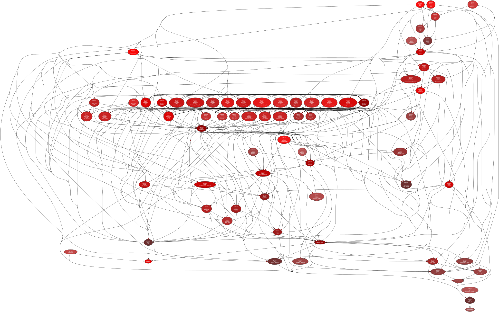

7.1. Library Structure#
Folder Structure
./optrace
├── __init__.py
├── __metadata__.py
├── gui
│ ├── __init__.py
│ ├── _scene_plotting.py
│ ├── command_window.py
│ ├── property_browser.py
│ └── trace_gui.py
├── plots
│ ├── __init__.py
│ ├── chromaticity_plots.py
│ ├── misc_plots.py
│ ├── r_image_plots.py
│ └── spectrum_plots.py
├── ressources
│ ├── illuminants.csv
│ ├── images
│ │ ├── ColorChecker.jpg
│ │ ├── ETDRS_Chart.png
│ │ ├── ETDRS_Chart_inverted.png
│ │ ├── TestScreen_square.png
│ │ ├── cell.webp
│ │ ├── group_photo.jpg
│ │ ├── interior.jpg
│ │ └── landscape.jpg
│ └── observers.csv
└── tracer
├── __init__.py
├── base_class.py
├── color
│ ├── __init__.py
│ ├── illuminants.py
│ ├── luv.py
│ ├── observers.py
│ ├── srgb.py
│ ├── tools.py
│ └── xyz.py
├── geometry
│ ├── __init__.py
│ ├── aperture.py
│ ├── detector.py
│ ├── element.py
│ ├── filter.py
│ ├── group.py
│ ├── ideal_lens.py
│ ├── lens.py
│ ├── line.py
│ ├── marker
│ │ ├── __init__.py
│ │ ├── line_marker.py
│ │ └── point_marker.py
│ ├── point.py
│ ├── ray_source.py
│ ├── surface
│ │ ├── __init__.py
│ │ ├── aspheric_surface.py
│ │ ├── circular_surface.py
│ │ ├── conic_surface.py
│ │ ├── data_surface_1d.py
│ │ ├── data_surface_2d.py
│ │ ├── function_surface_1d.py
│ │ ├── function_surface_2d.py
│ │ ├── rectangular_surface.py
│ │ ├── ring_surface.py
│ │ ├── spherical_surface.py
│ │ ├── surface.py
│ │ └── tilted_surface.py
│ └── volume
│ ├── __init__.py
│ ├── box_volume.py
│ ├── cylinder_volume.py
│ ├── sphere_volume.py
│ └── volume.py
├── load.py
├── misc.py
├── presets
│ ├── __init__.py
│ ├── geometry.py
│ ├── image.py
│ ├── light_spectrum.py
│ ├── refraction_index.py
│ ├── spectral_lines.py
│ └── spectrum.py
├── r_image.py
├── ray_storage.py
├── raytracer.py
├── refraction_index.py
├── spectrum
│ ├── __init__.py
│ ├── light_spectrum.py
│ ├── spectrum.py
│ └── transmission_spectrum.py
└── transfer_matrix_analysis.py
12 directories, 81 files
Dependency Tree
{kind=link}
